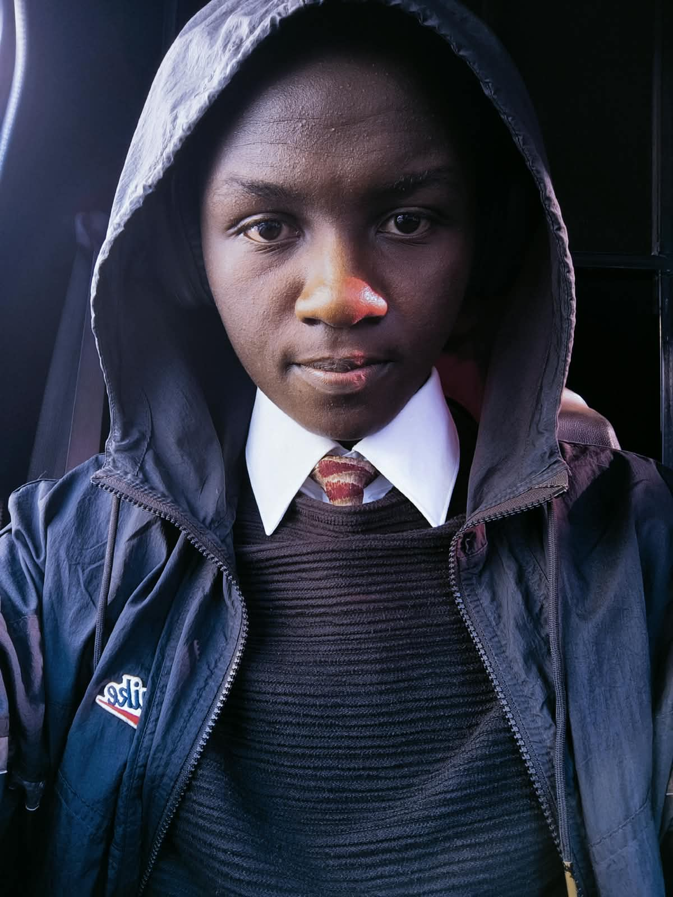

Software Development
Programming, problem solving, web development and building practical applications.
SOFTWARE ENGINEER · FUTURE ML ENGINEER
I build software, explore AI and turn ideas into practical digital products. Currently studying Software Engineering at Kirinyaga University.

01 / ABOUT
I enjoy turning ideas into working software and learning how technology can solve real problems.
My journey started with coding bootcamps and grew through university projects, hands-on technical work and independent experimentation. I am currently studying Software Engineering at Kirinyaga University while developing my skills across web development, programming, systems and AI.
Long term, I want to build products through Softsmake and specialize in Machine Learning Engineering.
02 / TOOLKIT
Programming, problem solving, web development and building practical applications.
Exploring machine learning workflows, AI tools, data-driven systems and model development.
Hands-on experience with computer systems, networks, servers, access points and troubleshooting.
Always experimenting with new technologies, developer tools and better ways to build.
03 / SELECTED WORK
A practical storefront project focused on product discovery, shopping flow and core business functionality.
A research project exploring market-structure detection, backtesting, optimization and validation for gold trading.
A programmer calculator supporting binary, octal, decimal and hexadecimal conversion with operand-size controls.
04 / JOURNEY
Software Engineering · Building a strong foundation in programming, systems, software design and computing.
Hands-on exposure to networking, server infrastructure, Windows installation and recovery, access points, hardware troubleshooting, maintenance and technical support.
Built discipline and teamwork through academics and scouting, including participation at national and East African level.
Built my early academic foundation before continuing into secondary education.
05 / BEYOND CODE
06 / CONTACT
I'm always interested in learning, collaborating and working on meaningful technology projects.
anoldonchangu34@gmail.com ↗